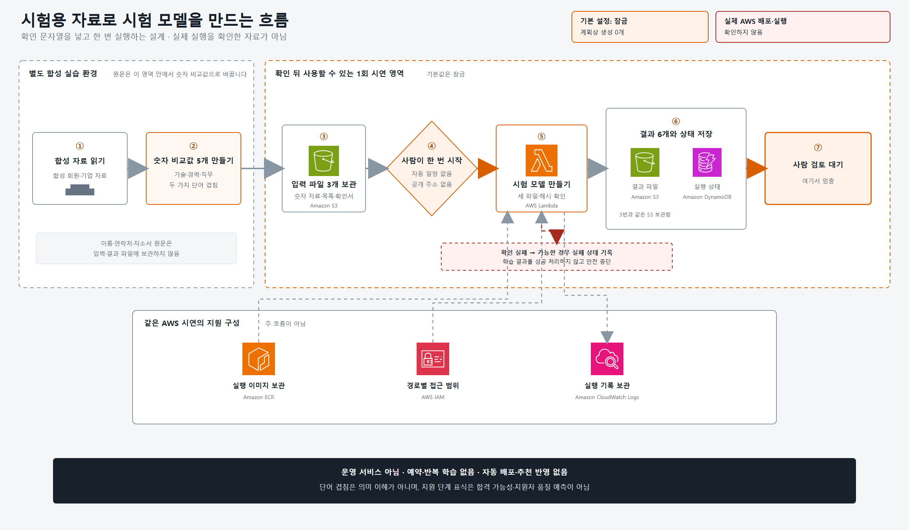

비교 목적
기술 70%, 경력 20%, 직무 10%로 계산하는 현재 기준과 후보 모델을 나란히 비교하기 위한 구조입니다.
설계 원칙
현재 추천 기준과 후보 모델을 같은 조건에서 비교할 수 있도록 자료, 실행 코드, 결과와 상태 기록을 한 묶음으로 관리합니다. 서비스 반영 여부는 담당자가 따로 검토합니다.
기술 70%, 경력 20%, 직무 10%로 계산하는 현재 기준과 후보 모델을 나란히 비교하기 위한 구조입니다.
검증용 합성 회원, 기업, 지원 데이터를 사용합니다. 원문은 모델에 넣기 전에 다섯 가지 비교 수치로 줄입니다.
학습 결과와 평가 기록을 저장한 뒤 “사람 검토 대기” 상태로 마칩니다. 자동 승격은 허용하지 않습니다.
학습 코드와 Terraform 계획, 단위시험을 제공합니다. AWS 배포와 이미지 등록, 실행 관찰은 별도 검증 단계입니다.
검증 파이프라인
단계 버튼을 누르면 관련 구간만 강조됩니다. 4번부터는 담당자가 확인값을 입력해 직접 시작하며 실행 번호, 파일 확인값과 처리 상태를 남깁니다.
합성 데이터 전용 · 담당자 수동 실행 · 검토 전 서비스 반영 차단
검증용 회원·기업 데이터만 읽습니다.
기술, 경력, 직무와 문서의 단어 겹침을 수치로 바꿉니다.
비교 자료, 파일 목록과 확인서를 나누어 보관합니다.
자동 일정과 공개 호출 주소는 없습니다.
파일이 바뀌지 않았는지 확인한 뒤 후보 모델을 만듭니다.
결과 파일 6개와 실행 상태를 따로 기록합니다.
검토 결과가 승인될 때까지 서비스 반영을 보류합니다.

데이터 아키텍처 연계
PostgreSQL 서비스 1개 안에 회원, 기업, 분석 참고용 논리 데이터베이스를 나눕니다. Redis는 별도 캐시 서비스이며 합성 문서 평가 결과는 세 번째 데이터베이스에 보관합니다.
구조 정의 완료 · API 참고 정보 연계 · 화면 연계 검토 중 · AWS 배포 검증 전
합성 회원과 이력서, 지원 기록을 관리합니다.
합성 기업과 공고, 공개 기업 정보 복사본을 관리합니다.
추천 API의 참고 정보만 보관합니다. 점수와 정렬 순위에는 사용하지 않습니다.
정해진 형식의 비교 수치 파일만 받습니다. 분석 참고 DB와 자동으로 연결하지 않습니다.
기술 표기: PostgreSQL 서비스 1개 · 논리 DB 3개 · Redis 캐시 별도
API 응답의 참고 항목으로만 사용하며 점수 계산, 정렬 순위, 모델 학습에는 반영하지 않습니다. 화면 연계는 다음 검토 항목입니다.
MLOps 기술 명세
학습 코드와 Terraform에 반영된 현재 기준입니다. 모델 품질과 공정성, 서비스 승격 여부는 별도 평가 절차에서 다룹니다.
담당자가 확인값과 실행 정보를 입력해 Lambda 작업을 한 차례 실행합니다. 외부 공개 API와 자동 실행 일정은 두지 않았고, 확인값은 의도하지 않은 실행을 막는 잠금장치로 사용합니다.
action): 후보 모델 학습 한 종류만 허용run_id): 정해진 안전 문자만 사용source_mode): 숫자 비교 파일로 고정source_prefix): 그 실행에 정해 둔 폴더만 허용disabled)이며 계획 수는 0단계별 AWS 구성
아래 수치는 AWS에 접속하지 않고 Terraform으로 계산한 단계별 계획입니다. 기존 서비스 아키텍처의 110개와 분리된 MLOps 전용 구성입니다.
| 설정 | 예상 수 | 무엇을 준비하나 | 다음 단계 조건 |
|---|---|---|---|
기본 잠금 disabled | 0 | 생성 계획 없음 | 기본 시작점 |
보관함 준비 bootstrap | 13 | 파일·이미지·상태·로그 보관함과 경로·표 범위로 제한한 권한 | 확인값과 겹치지 않는 보관함 이름 |
한 번 실행 runtime | 14 | 위 13개와 작업 실행기 1개 | 내용 지문으로 고정한 실행 이미지 |
해석 범위
현재 검증은 데이터 경계와 실행 통제를 확인하는 단계입니다. 채용 효과와 모델 품질은 별도의 평가 자료가 필요합니다.
현 단계의 두 가지 문서 비교값은 자소서와 공고에 같은 단어가 얼마나 겹치는지 계산합니다. 분석 범위는 단어 중복 정도까지입니다.
지원 단계 표식은 모델 비교 실험에만 사용합니다. 합격 가능성과 채용 성공률 해석에서는 제외합니다.
현재 검증은 합성 데이터 표식과 검증용 연락처 형식을 확인합니다. 운영 데이터 반입에는 출처 확인, 별도 학습 동의와 고객사 분리 통제가 필요합니다.
Terraform 계획과 단위시험은 통과했습니다. 이미지 등록과 Lambda 실행, 운영 관찰은 별도의 AWS 배포 검증 기록으로 관리합니다.
검증 결과
2026-08-30 기준 검사 결과입니다. 검사 기록에는 명령별 결과와 파일 확인값을 남겼습니다. 공개 파일이 바뀌면 일치 검사가 실패하며, 위 데이터 확장안은 아래 검사 범위에 포함되지 않습니다.
| 검사 | 결과 | 확인 범위 |
|---|---|---|
| Terraform 형식·구문 | PASS | fmt -check, validate |
| AWS 비접속 단계별 계획 | 3/3 PASS | disabled 0, bootstrap 13, runtime 14 |
| 기본 잠금 계획 | PASS · 관리 자원 0 | -refresh=false, 기존 state 없음 |
| 위험 설정 차단 시험 | 12/12 PASS | 허용 주소, 삭제·금지 서비스, 실행 도구 |
| 합성 데이터 처리 시험 | 14/14 PASS | 테스트 대역 S3·DynamoDB, 원문 잔류·중복·실패 조건 |
| 공개 파일 일치 검사 | PASS | 7단계, 링크, 그림 원본, 2400×1400 PNG, 파일 지문 일치 |
| 공개 전 안전 검사 | PASS | 임시 실행 파일 0, 비밀키·실제 계정 번호처럼 보이는 값 0 |
PASS는 공개 소스와 Terraform 계획이 정해진 검사 조건을 통과했다는 뜻입니다. AWS 배포와 모델 품질 평가는 별도 검증 기록으로 관리합니다.
직접 확인할 자료
필요하면 AWS 계획 코드, 학습 코드, 검사 코드와 편집 가능한 그림 원본을 직접 대조할 수 있습니다.
| 자료 | 용도 |
|---|---|
| MLOps 소스 설명 | 같은 결과를 다시 만드는 방법, 자료 줄이기, 모델 한계 |
| Terraform 설명 | 잠금 단계, 필요한 부품, 운영 주의점 |
| Terraform 본문 | 13개 기반 자원과 선택적 Lambda 선언 |
| 자료 처리 시험 | 테스트 대역 S3·DynamoDB로 다시 실행하는 검사 |
| Terraform 안전 시험 | 허용 자원, 잠금, 금지 서비스, 실행 도구 검사 |
| draw.io 원본 | 2400×1400 한글 인프라 흐름도 편집 원본 |
| 검사 기록 | 실행 시각, 명령별 결과, 파일별 내용 지문 |
{kind=link}